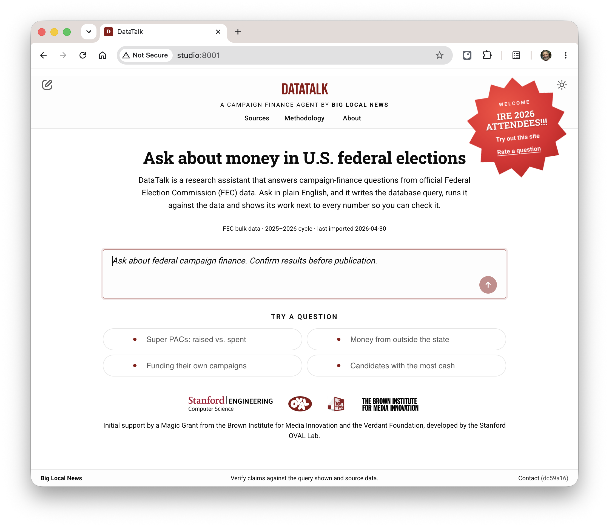
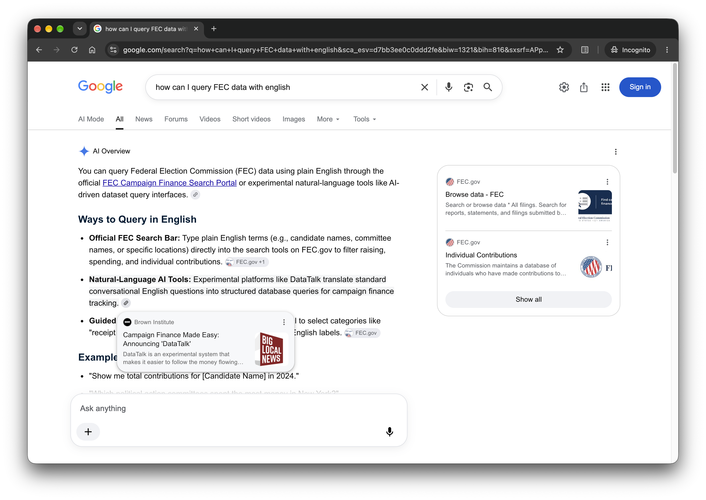
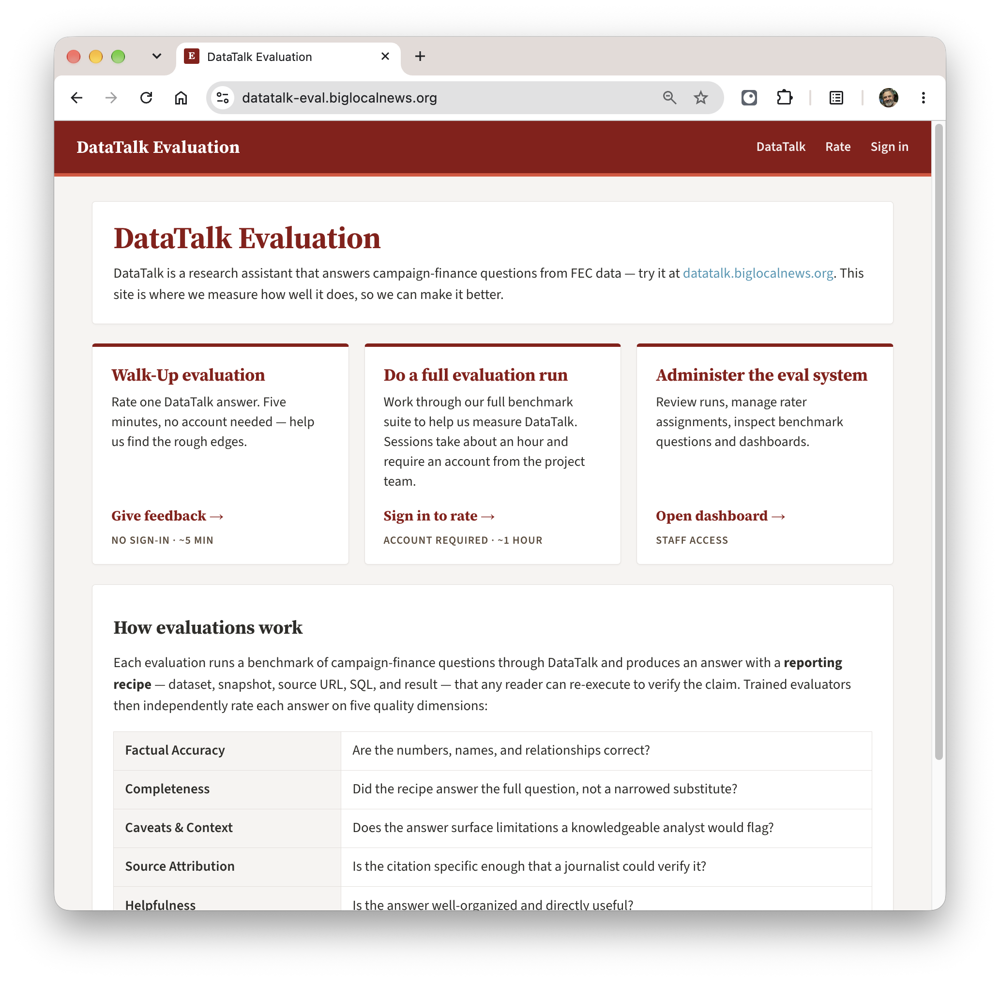
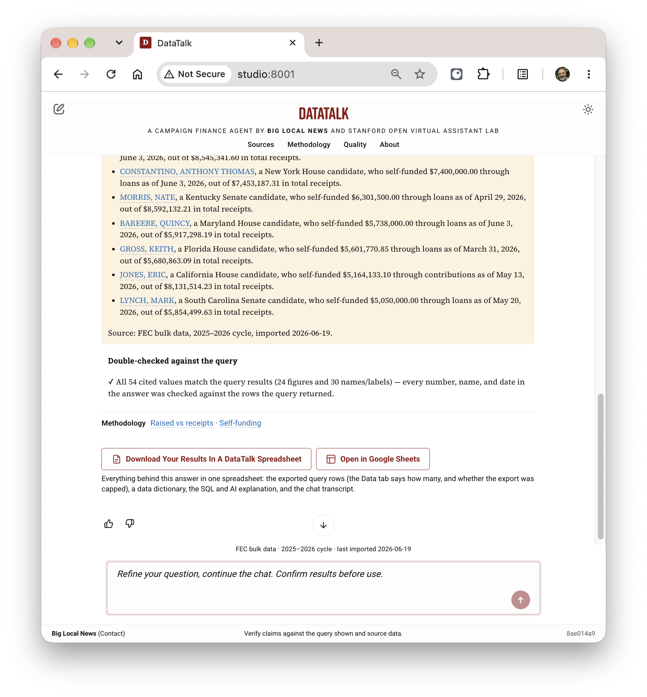

We Built This: DataTalk V2

Since April I've been working with the Big Local News team at Stanford building DataTalk, a website for journalists to look for story leads in US federal campaign finance data using plain English. It's been a fun project and I'm proud of what we've built.
Before reading on, why not try it out for yourself? You can select one of the four sample queries on the homepage. Or type your own query, something you're interested in, like "show a list of all the donors who have donated to either AOC or Bernie Sanders this election cycle". Ask a follow-up question to drill down or click on one of the suggestions. Download your data in a spreadsheet alongside helpful context.
We re-launched this at the annual Investigative Reporters and Editors conference (IRE 2026) in Washington DC in June. That was a lot of fun. Since then we've been polishing it up and improving quality. It's ready for this election cycle -- I hope it gets a lot of use to report on the messy world of election finance over the coming months.
How DataTalk V2 Came About
V1 of the site had been built and launched by the Open Virtual Assistant Lab (OVAL) at Stanford two years ago. V1 was developed as a showpiece for NL to SQL processing technology that OVAL had built, and did that just fine. Campaign finance was chosen as a showpiece dataset because it was complex enough that a query interface is helpful. The US FEC makes the dataset readily available. When V1 was under development it was an election year too.
Post 2024, DataTalk V1 left some room for improvement.
-
The data had gotten stale. Election reporting is seasonal. During election years it's interesting and then it's not. After the 2024 election season people stopped minding it and the loaders stopped loading.
-
The site needed more domain expertise. Part of DataTalk's value is to bake in knowledge about this particular dataset and domain. The FEC dataset is a bit quirky. The people who work with it have developed expertise in using this data well. There was a lot more we could do to encapsulate not just the schemas, but specific know-how too.

2026 (now) is an election year. When I found Cheryl and Big Local News a few months back (prior post), Stanford was already trying to decide whether to make DataTalk better or take it down. I was looking for a project so I volunteered to take it on. Big Local News took over the code and responsibility from OVAL.
Most of my day-to-day was with two strong engineers from Big Local News: Gerald Rich, journalist/engineer and Ryan Pitts, managing director. Cheryl Phillips runs all of Big Local News but managed to stay close to this project, participating in demos and adding product direction.
Together we stood up a little project with sprints and demos and CI. Over ten weeks we fixed the loaders, rewired the LLM interface, and refreshed the UI. We got it into good enough shape to show off at IRE (more to say about that soon), and then spent the rest of the summer making it good.
What We Built and Why
What we got from V1 was the core NL to SQL engine. That has always worked really well and we haven't had to change that much. Around that, however, we made some improvements in three main areas: an eval system, transparency around how we use AI, and supporting features for journalists.
1. A New Eval System
My main contribution to the product was driving the need for a formal eval system. From the start I identified this as a gap in V1.
I'm using "eval" here in the way that we used it at Google Search: having humans rate search results and using that feedback to monitor and improve quality. Google has a whole set of tools and workflows to work with human raters.
We needed to do the same with DataTalk. I built a little workflow system that would put our answers in front of human raters and ask them how we did. We built up a set of test queries, about 100, and then asked raters to score our work on them. The methodology and rubric are right on the homepage of the eval site: datatalk-eval.biglocalnews.org, check it out there. You can even do a one-question eval yourself!

We engaged an expert in campaign finance data, Derek Willis from the University of Maryland. He has a ton of experience with this quirky dataset. He was also a pleasure to work with. We were able to condense a bunch of his campaign-finance knowledge into our prompts. Derek also built for us a corpus of eval questions, more than 100. Some are easy and some are hard; most are ones that have a correct answer that we score for, but some are ones where we shouldn't answer and for those we should politely refuse and explain why. As we've added features, we've added to the corpus of questions.
We got a handful of journalism students and ex-journalists to run through all our questions and do a complete quality eval pass. For the questions where we scored poorly we opened up bugs and chased them down. I also used AI raters (Fable from Anthropic, Sol from ChatGPT) to do their own assessment and compared their scores to the humans' -- not as good, but a helpful first pass.
As part of our normal engineering process we do a pre/post comparison run against the rubric on 20 benchmark questions. We judge using a cheaper model, gemini-2.5-pro, which works pretty well. This is really helpful when making prompt changes. I've seen a seemingly innocuous prompt change cause a regression in one of our benchmark queries that we would never have caught without judging every pull request as it happens.
2. AI Transparency
This project makes heavy use of AI. It's the first project of any size where I've leaned so heavily on AI for primary coding. It's been pretty great.
-
Our velocity has been good. We turn around features and fixes quickly. We use AI for production setup and debugging, so even with a small team we can have good engineering and ops practices (push to staging first...). That's not just more code, but it makes for a fun project to work on.
-
I've got a nice rhythm where I use my $100/month Anthropic/Claude Code plan for primary coding, but then use a $20/month OpenAI/Codex plan to review work before submitting a PR.
And then for the product itself, we make it very clear where we are using AI and where we are not. Journalists are a naturally skeptical bunch. We lean into that by making it clear that we only use AI in two ways: to convert the natural language input into SQL, and then to interpret the results we get into a narrative. We call out the narrative in a prominent yellow box to make it clear what is AI-generated, and remind people over and over to double-check.
The screenshot below shows the AI narrative in the yellow "scare quotes" box, the result of our double-check (all OK), calling out any special gotchas in this dataset with links into a tipsheet, and then links to download the artifact as an Excel spreadsheet on your local machine or into Google Sheets.

We tried a couple of AI models and found the Gemini 2.5 series fine for what we need. We use gemini-2.5-flash for a first pass, and if it can't handle the query we escalate to gemini-2.5-pro. That's proven effective.
3. Tailored to Journalist Use
It's been great working with a team that knows their users well. While V1 was a bit more general, part of Big Local News taking it over was leaning into the journalist use case. I think we've done that well.
-
We only use primary sources. Currently we have two: the data campaigns are required by law to report, gathered and collated by the Federal Election Commission, loaded nightly. And the DIME dataset maintained by Prof. Adam Bonica at Stanford, which we use to judge the political leaning of a PAC or Super PAC -- this lets us answer questions like "who has gotten the most funding this year from conservative PACs?"
This is the main differentiator between DataTalk and normal search or chatbots. You can drop in a query to a chatbot today and get something, and in many cases it's not bad. But that won't do for reporting.
-
Transparency tools. If you want to get into the SQL itself, we have a whole hosted query site. You can take the SQL we generate, run it yourself directly on FEC and DIME data tables, modify, re-run, and share. V1 had a similar SQL interface, which we mostly brought forward.
-
Downloadable, self-contained spreadsheet. We take the whole chat and give you a nice way to download the whole thing in a single, easy-to-use artifact. It has basic information about where this came from, the data itself in a nicely-formatted table, a data dictionary, the AI-generated narrative, and the whole transcript of the chat. This can be a useful takeaway for further analysis, or something to show your editor to prove where this came from and how.
Here's an example. This one was the result of a query asking for all people who have donated to either AOC or Bernie this cycle: Google sheet.
Also: It's a Well-Run Little Service
I'd like to mention that I'm proud of the ops side. We have good monitoring and alerting in case a nightly loader looks weird or the site starts throwing errors. We have good dev tooling in place for local testing and qualification in staging before release. Releases are frequent and drama-free.
Costs are low. Cheap queries cost about $0.01 per. For hard ones, we can escalate to the "pro" model which ups the per-query cost to $0.04, still not too bad. The Google Cloud stack has been great for this. Cloud Run instances have great horizontal scaling. BigQuery is fast and reliable and cheap.
What's Next
While I'd love to keep improving DataTalk, we've kind of reached the pencils-down point now. Almost all of this product's use will come over the next eight weeks or so as we ramp up to the 2026 midterm elections in early November. So while I'd love to keep refining our prompts and benchmarking new models, we need to lock it down.
We've started training sessions with journalists now. It's great to see it get some real use. We won't take DataTalk down after the election and I expect we'll continue to maintain it. But it won't be used much which is fine and to be expected.
We may use this same approach for other datasets. The whole point of Big Local News is to arm local journalists with tools to do investigative journalism better, faster, cheaper. We don't want to use AI to write stories, but maybe we can use AI to fish potential stories out of streams of data all around us. And by doing that, hold more powerful people to account.